看到了一篇关于图像滤波的文章，详细地解释了从波和信号处理的角度来理解图像。
以下为原文。
前几天读到一篇文章，它提到图像其实是一种波，可以用波的算法处理图像。我顿时有一种醍醐灌顶的感觉，从没想到这两个领域是相关的，图像还可以这样玩！下面我就来详细介绍这篇文章。
一、为什么图像是波？
我们知道，图像由像素组成。下图是一张 400 x 400 的图片，一共包含了 16 万个像素点。

每个像素的颜色，可以用红、绿、蓝、透明度四个值描述，大小范围都是0 ～ 255，比如黑色是[0, 0, 0, 255]，白色是[255, 255, 255, 255]。通过 Canvas API 就可以拿到这些值。
如果把每一行所有像素（上例是400个）的红、绿、蓝的值，依次画成三条曲线，就得到了下面的图形。
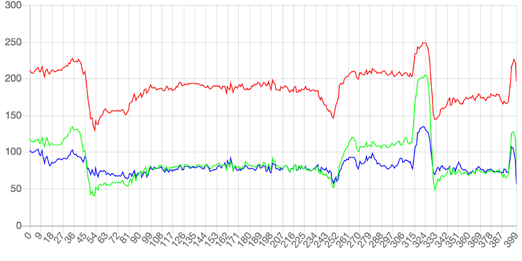
可以看到，每条曲线都在不停的上下波动。有些区域的波动比较小，有些区域突然出现了大幅波动（比如 54 和 324 这两点）。
对比一下图像就能发现，曲线波动较大的地方，也是图像出现突变的地方。
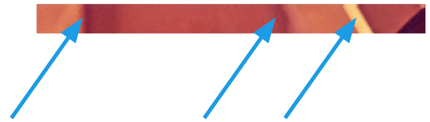
这说明波动与图像是紧密关联的。图像本质上就是各种色彩波的叠加。
二、频率
综上所述，图像就是色彩的波动：波动大，就是色彩急剧变化；波动小，就是色彩平滑过渡。因此，波的各种指标可以用来描述图像。
频率（frequency）是波动快慢的指标，单位时间内波动次数越多，频率越高，反之越低。
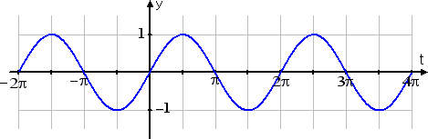
上图是函数 sin(Θ) 的图形，在 2π 的周期内完成了一次波动，频率就是1。
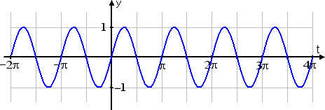
上图是函数sin(2Θ)的图形，在2π的周期内完成了两次波动，频率就是2。
所以，色彩剧烈变化的地方，就是图像的高频区域；色彩稳定平滑的地方，就是低频区域。
三、滤波器
物理学对波的研究已经非常深入，提出了很多处理波的方法，其中就有滤波器（filter）：过滤掉某些波，保留另一些波。
下面是两种常见的滤波器 。
- 低通滤波器（lowpass）：减弱或阻隔高频信号，保留低频信号
- 高通滤波器（highpass）：减弱或阻隔低频信号，保留高频信号
下面是低通滤波的例子。
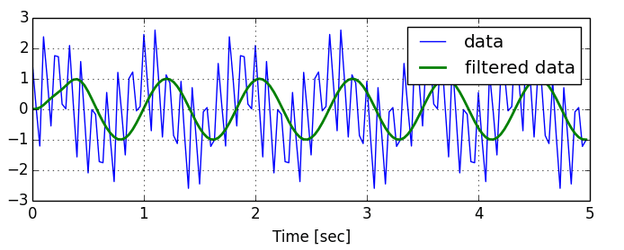
上图中，蓝线是原始的波形，绿线是低通滤波 lowpass 后的波形。可以看到，绿线的波动比蓝线小很多，非常平滑。
下面是高通滤波的例子。
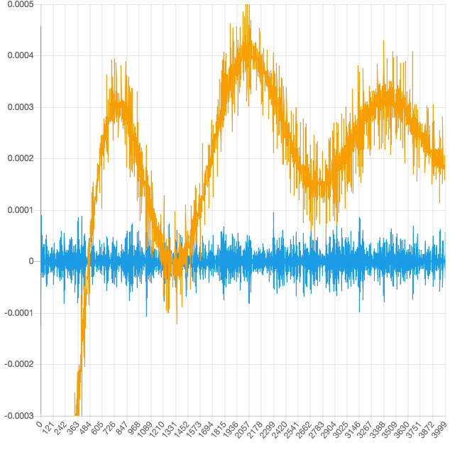
上图中，黄线是原始的波形，蓝线是高通滤波 highpass 后的波形。可以看到，黄线的三个波峰和两个波谷（低频波动），在蓝线上都消失了，而黄线上那些密集的小幅波动（高频波动），则是全部被蓝线保留。
再看一个例子。
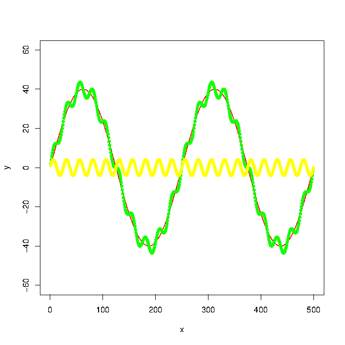
上图有三根曲线，黄线是高频波动，红线是低频波动。它们可以合成为一根曲线，就是绿线
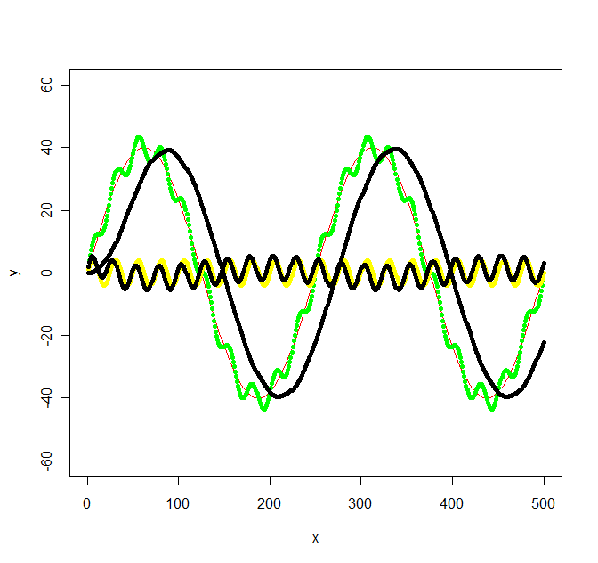
上图中，绿线进行低通滤波和高通滤波后，得到两根黑色的曲线，它们的波形跟原始的黄线和红线是完全一致的。
四、图像的滤波
浏览器实际上包含了滤波器的实现，因为 Web Audio API 里面定义了声波的滤波。这意味着可以通过浏览器，将 lowpass 和 highpass 运用于图像。
lowpass 使得图像的高频区域变成低频，即色彩变化剧烈的区域变得平滑，也就是出现模糊效果。
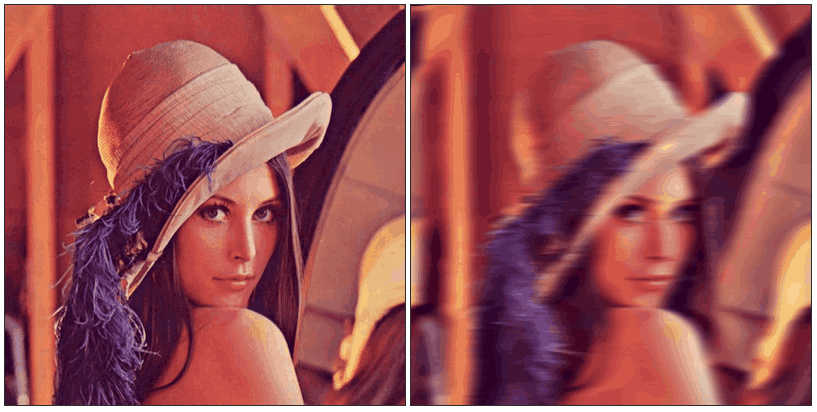
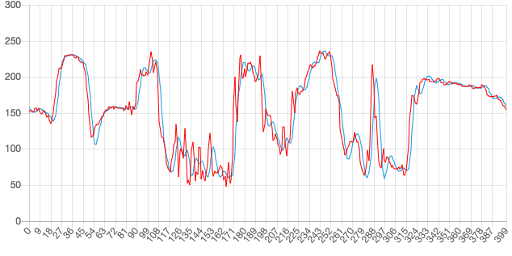
上图中，红线是原始的色彩曲线，蓝线是低通滤波后的曲线。
highpass 正好相反，过滤了低频，只保留那些变化最快速最剧烈的区域，也就是图像里面的物体边缘，所以常用于边缘识别。
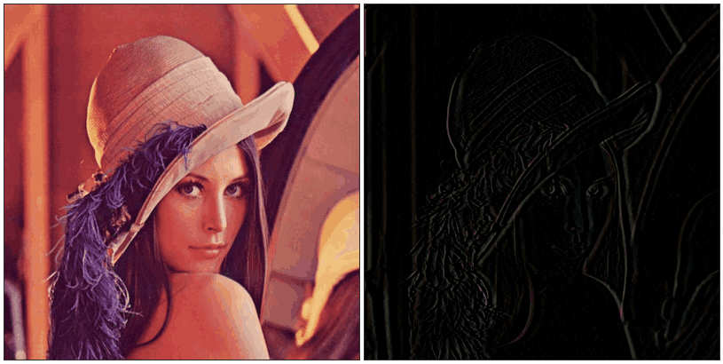
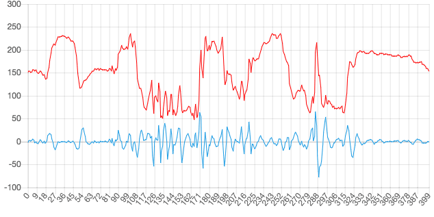
上图中，红线是原始的色彩曲线，蓝线是高通滤波后的曲线。
下面这个网址，可以将滤波器拖到图像上，产生过滤后的效果。
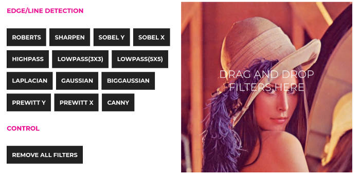
浏览器实现滤波的范例代码，可以看这个仓库。